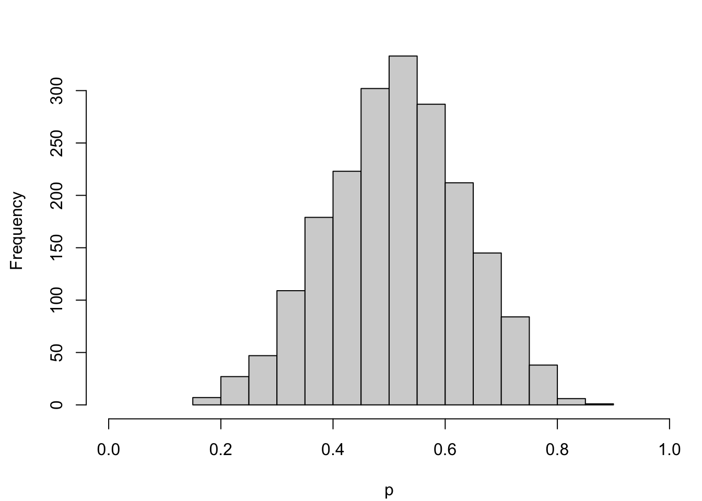
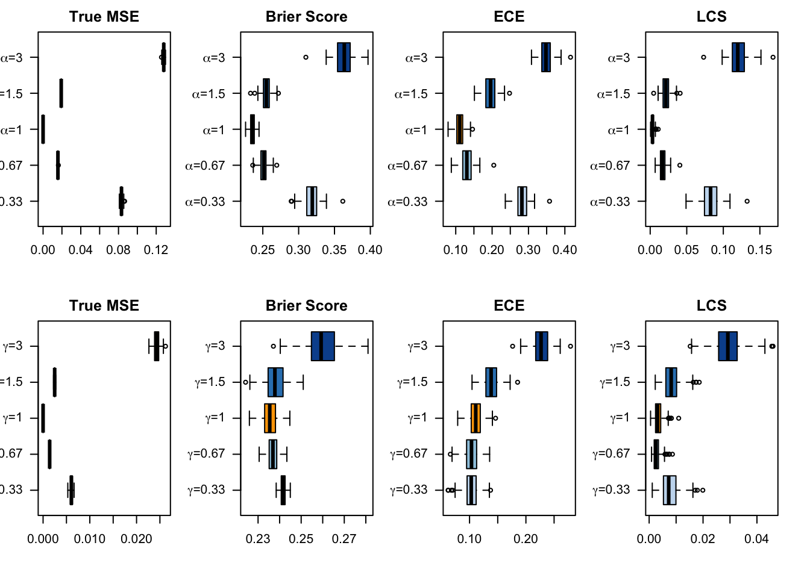
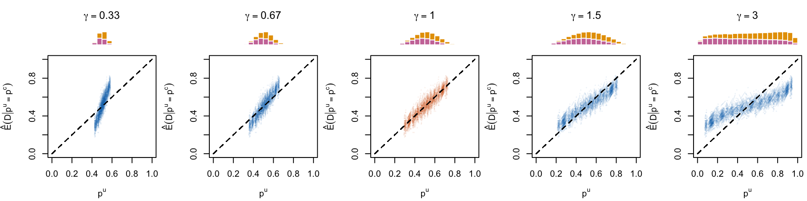
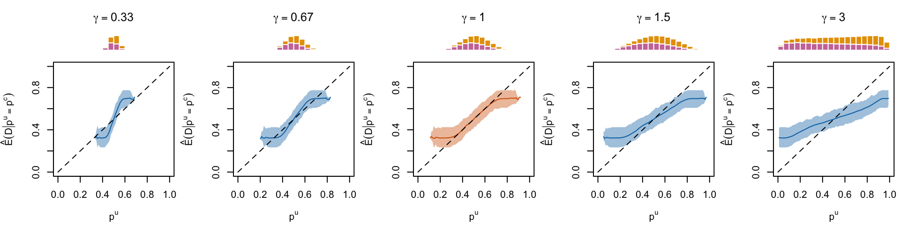
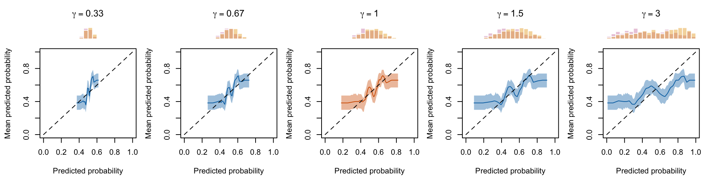

In this notebook, we present a Data Generative Process (DGP) that will be used to run simulations. We consider a binary outcome variable with a latent probability. We would like to build a classifier for that outcome variable, for which the estimated scores will reflect the true latent probability.
However, when building a classifier, if the model is not well calibrated, the estimated scores may not be good estimates of the latent probabilities. To have a better insight on the impact of having a non calibrated model, we will apply transformations to the true probabilities and examine how this affects the calibration metrics. These transformations will be termed as “decalibration” of the true probabilities.
Display the definitions of colors.
library(tidyverse)
── Attaching core tidyverse packages ──────────────────────── tidyverse 2.0.0 ──
✔ dplyr 1.1.3 ✔ readr 2.1.4
✔ forcats 1.0.0 ✔ stringr 1.5.0
✔ ggplot2 3.4.1 ✔ tibble 3.2.1
✔ lubridate 1.9.2 ✔ tidyr 1.3.0
✔ purrr 1.0.1
── Conflicts ────────────────────────────────────────── tidyverse_conflicts() ──
✖ dplyr::filter() masks stats::filter()
✖ dplyr::lag() masks stats::lag()
ℹ Use the conflicted package (<http://conflicted.r-lib.org/>) to force all conflicts to become errors
Let us consider a binary variable that is assumed to follow a Bernoulli distribution: \(D_i\sim B(p_i)\), where \(p_i\) is the probability of observing \(D_i = 1\). We define this probability \(p_i\) according to the following function \[p_i = \frac{1}{1+\exp(-\eta_i)}, \tag{1.1}\]
Figure 1.1: Distribution of the true probabilities

1.1.1 Poor Calibration
As previously mentioned, we would like to measure the calibration of a binary classifier. To do so, we will deliberately transform the probabilities. We consider two types of transformations:
one applied to the latent probability
another applied to the linear predictor.
In a more formal way, we will introduce two scaling parameters. The scaling parameter that modifies the latent probability changes Equation eq-true-propensity which becomes: \[p_i^{u} = \left(\frac{1}{1+\exp(-\eta_i^u)}\right)^{\alpha} \tag{1.3}\] The scaling parameter that modifies the linear predictor changes Equation eq-propensity-eta which becomes: \[\eta_i^u = \gamma \times \left( (-0.1)x_1 + 0.05x_2 + 0.2x_3 - 0.05x_4 + \varepsilon_i\right), \tag{1.4}\]
We define a function to simulate data according to the GDP. This function allows to transform the probabilities (by default, it does not).
#' Simulates data#'#' @param n_obs number of desired observations#' @param seed seed to use to generate the data#' @param alpha scale parameter for the latent probability (if different #' from 1, the probabilities are transformed and it may induce decalibration)#' @param gamma scale parameter for the latent score (if different from 1, #' the probabilities are transformed and it may induce decalibration)sim_data <-function(n_obs =2000, seed, alpha =1, gamma =1,a =c(-0.1, 0.05, 0.2, -0.05)) {set.seed(seed) x1 <-runif(n_obs) x2 <-runif(n_obs) x3 <-runif(n_obs) x4 <-runif(n_obs) a1 <- a[1] a2 <- a[2] a3 <- a[3] a4 <- a[4] epsilon_p <-rnorm(n_obs, mean =0, sd = .5)# True latent score eta <- a1*x1 + a2*x2 + a3*x3 + a4*x4 + epsilon_p# Transformed latent score eta_u <- gamma * eta# True probability p <- (1/ (1+exp(-eta)))# Transformed probability p_u <- ((1/ (1+exp(-eta_u))))^alpha# Observed event d <-rbinom(n_obs, size =1, prob = p)tibble(# Event Probabilityp = p,p_u = p_u,# Binary outcome variabled = d,# Variablesx1 = x1,x2 = x2,x3 = x3,x4 = x4 )}
We can then use that function to observe how it impacts the latent probability distribution.
1.1.1.1 Varying \(\alpha\)
Let us consider \(\alpha = \{1/3, 2/3, 1, 3/2, 3\}\).
Figure 1.5: Effect of varying \(\gamma\) on the latent probabilities
1.2 Measuring Calibration
A model is calibrated if:
\[\mathbb{P}(D = d \mid s(x) = p) = p,\]
for all values \(p \in[0,1]\) and values \(d = \{0,1\}\), where \(s(x)\) is the estimated score that is output by a model.
Warning
In our case, when we vary \(\alpha\) or \(\gamma\), \(s(x)\) corresponds to \(p^u\), the transformed probabilities.
To have an idea of the calibration of a model, we can use two ways:
a metric-based technique
a visualization-based technique.
1.2.1 Metrics
Let us define functions to compute the following metrics:
MSE based on true probabilities
Brier Score
Expected Calibration Error
MSE on quantile-based bins (QMSE)
Weighted MSE on the calibration curve defined on a continuum of values.
Note
Each metric is defined below.
1.2.1.1 MSE Based on true probabilities
As we observe the true probabilities in our simulations, we can compare the transformed probabilities \(p^u\) to the true probabilities \(p\). The MSE writes: \[\text{MSE} = \frac{1}{n}\sum_{i=1}^{n} \left(p_i - p_i^u\right)^2. \tag{1.5}\]
1.2.1.2 Brier Score
The target variable \(D\) is binary and takes values in \(\{0,1\}\). In that case, the Brier Score writes: \[\text{BS} = \frac{1}{n}\sum_{i=1}^{n} (s(x_i) - d_i)^{2}, \tag{1.6}\] where \(s(x_i)\) is the predicted score (we use here either the true value \(p\) or its “uncalibrated” version \(p^u\)) for observation \(i\) and \(d_i\) is the outcome variable.
To measure the calibration of a model, one of the metrics, Expected Calibration Error (or ECE), consists in splitting the predicted scores \(s(x)\) into bins and computing in each bins two metrics: the accuracy (average of the empirical probabilities in the sample, or fractions of correctly predicted classes) and the confidence (average of the predicted scores in the bin). The Expected Calibration Error is then computed as the average over the bins
where \(n_b\) is the number of observations in bin \(b\), \(n\) is the number of observations, \(\text{acc}(b)\) is the accuracy of bin \(b\), and \(\text{conf}(b)\) is the the confidence in bin \(b\).
The accuracy of a bin is defined as the average of the correctly predicted classes in the bin: \[\text{acc}(b) = \frac{1}{n_b} \sum_{i \in b} \mathrm{1}_{\hat{d}_i = d_i}, \tag{1.8}\] where \(\hat{d}_i\) is the predicted class (0 or 1) for observation \(i\): \[\hat{d}_i = \begin{cases}
1, & s(x) \geq \tau\\
0, & s(x) < \tau\\
\end{cases},\]
where \(\tau\) is the classification threshold, with \(\tau = .5\) by default and where \(s(x)\) is the propensity score.
The confidence of a bin is defined as the average of the predicted scores in the bin: \[\text{conf}(b) = \frac{1}{n_b} \sum_{i \in b} s(x) \tag{1.9}\]
We define a function to compute the bins. We will consider here the deciles to create the bins (and therefore set k=10 in our function).
#' Computes summary statistics for binomial observed data and predicted scores#' returned by a model#'#' @param obs vector of observed events#' @param scores vector of predicted probabilities#' @param k number of classes to create (quantiles, default to `10`)#' @param threshold classification threshold (default to `.5`)#' @return a tibble where each row correspond to a bin, and each columns are:#' - `score_class`: level of the decile that the bin represents#' - `nb`: number of observation#' - `mean_obs`: average of obs (proportion of positive events)#' - `mean_score`: average predicted score (confidence)#' - `sum_obs`: number of positive events (number of positive events)#' - `accuracy`: accuracy (share of correctly predicted, using the#' threshold)get_summary_bins <-function(obs, scores,k =10, threshold = .5) { breaks <-quantile(scores, probs = (0:k) / k) tb_breaks <-tibble(breaks = breaks, labels =0:k) |>group_by(breaks) |>slice_tail(n =1) |>ungroup() x_with_class <-tibble(obs = obs,score = scores, ) |>mutate(score_class =cut( score,breaks = tb_breaks$breaks,labels = tb_breaks$labels[-1],include.lowest =TRUE ),pred_class =ifelse(score > threshold, 1, 0),correct_pred = obs == pred_class ) x_with_class |>group_by(score_class) |>summarise(nb =n(),mean_obs =mean(obs),mean_score =mean(score), # confidencesum_obs =sum(obs),accuracy =mean(correct_pred) ) |>ungroup() |>mutate(score_class =as.character(score_class) |>as.numeric() ) |>arrange(score_class)}
Let us consider, to illustrate how this function works, the case where the probabilities are transformed using \(\alpha=\) 0.3333333. We can consider that these values would be the estimated score returned by an uncalibrated model. We would then obtain the following summary statistics for each bin:
Note that due to the random noise introduced in the DGP, the ECE is not equal to 0.
1.2.1.4 QMSE
Let us compute the MSE on based on the quantile-defined bins (as explained in sec-ece). To do so, we first calculate the quantiles of the predicted scores: \(p_\tau\). This allows us to define bins \(b=1,\ldots, B\) based on the quantiles.
For each bin, we compute the average of the observed event: \[\bar{d}_b = \frac{1}{n_b} \sum_{i\in b} d_i,\] where \(n_b\) is the number of observation in bin \(b\).
Then, we can compute the confidence in each bin, i.e, the average of the predicted score \(s(x)\): \[\text{conf}(b) = \frac{1}{n_b} \sum_{i\in b} s(x),\]
#' Quantile-Based MSE#'#' @param obs vector of observed events#' @param scores vector of predicted probabilities#' @param k number of classes to create (quantiles, default to `10`)#' @param threshold classification threshold (default to `.5`)qmse_error <-function(obs, scores, k =10, threshold = .5) { summary_bins <-get_summary_bins(obs = obs, scores = scores, k = k, threshold = .5 ) summary_bins |>mutate(qmse_bin = nb * (mean_obs - mean_score)^2) |>summarise(qmse =1/sum(nb) *sum(qmse_bin)) |>pull(qmse)}
1.2.1.5 WMSE
In a similar fashion to the QMSE, we define the Weighted MSE (WMSE). We define a metric to measure calibration based on how far from the perfect calibration is the model. More specifically, for each of the values at which we computed \(E(D \mid s(x) = p)\), with \(p \in [0,1]\) we compute the squared difference between \(E(D \mid s(x) = p)\) and \(D\). We then aggregate the results using a weighted mean, where the weights are the estimated density of the propensity scores \(s(x)\) at the corresponding values at which \(E(D \mid s(x) = p)\) was estimated.
Let us define a function, local_ci_scores(), that identifies the nearest neighbors of a certain predicted score and then calculates the mean scores in that neighborhood accompanied with its confidence interval. This functions requires the binom.confint() function from {binom}.
library(binom)
#' @param obs vector of observed events#' @param scores vector of predicted probabilities#' @param tau value at which to compute the confidence interval#' @param nn fraction of nearest neighbors#' @prob level of the confidence interval (default to `.95`)#' @param method Which method to use to construct the interval. Any combination#' of c("exact", "ac", "asymptotic", "wilson", "prop.test", "bayes", "logit",#' "cloglog", "probit") is allowed. Default is "all".#' @return a tibble with a single row that corresponds to estimations made in#' the neighborhood of a probability $p=\tau$`, using the fraction `nn` of#' neighbors, where the columns are:#' - `score`: score tau in the neighborhood of which statistics are computed#' - `mean`: estimation of $E(d | s(x) = \tau)$#' - `lower`: lower bound of the confidence interval#' - `upper`: upper bound of the confidence intervallocal_ci_scores <-function(obs, scores, tau, nn,prob = .95,method ="probit") {# Identify the k nearest neighbors based on hat{p} k <-round(length(scores) * nn) rgs <-rank(abs(scores - tau), ties.method ="first") idx <-which(rgs <= k)binom.confint(x =sum(obs[idx]),n =length(idx),conf.level = prob,methods = method )[, c("mean", "lower", "upper")] |>tibble() |>mutate(xlim = tau) |>relocate(xlim, .before = mean)}
We define the weighted_mse() function that will then rely results obtained with the local_ci_scores() and compute the WMSE.
#' Compute the Weighted Mean Squared Error to assess the calibration of a model#'#' @param local_scores tibble with expected scores obtained with the #' `local_ci_scores()` function#' @param scores vector of raw predicted probabilitiesweighted_mse <-function(local_scores, scores) {# To account for border bias (support is [0,1]) scores_reflected <-c(-scores, scores, 2- scores) dens <-density(x = scores_reflected, from =0, to =1, n =length(local_scores$xlim) )# The weights weights <- dens$y local_scores |>mutate(wmse_p = (xlim - mean)^2,weight =!!weights ) |>summarise(wmse =sum(weight * wmse_p) /sum(weight)) |>pull(wmse)}
1.2.1.6 Local Calibration Score
library(locfit)
locfit 1.5-9.8 2023-06-11
Attachement du package : 'locfit'
L'objet suivant est masqué depuis 'package:purrr':
none
#' Calibration score using Local Regression#' #' @param obs vector of observed events#' @param scores vector of predicted probabilitieslocal_calib_score <-function(obs, scores) {# Add a little noise to the scores, to avoir crashing R scores <- scores +rnorm(length(scores), 0, .001) locfit_0 <-locfit(formula = d ~lp(scores, nn =0.15, deg =0), kern ="rect", maxk =200, data =tibble(d = obs,scores = scores ) )# Predictions on [0,1] linspace_raw <-seq(0, 1, length.out =100)# Restricting this space to the range of observed scores keep_linspace <-which(linspace_raw >=min(scores) & linspace_raw <=max(scores)) linspace <- linspace_raw[keep_linspace] locfit_0_linspace <-predict(locfit_0, newdata = linspace) locfit_0_linspace[locfit_0_linspace >1] <-1 locfit_0_linspace[locfit_0_linspace <0] <-0# Squared difference between predicted value and the bissector, weighted by the density of values scores_reflected <-c(-scores, scores, 2- scores) dens <-density(x = scores_reflected, from =0, to =1, n =length(linspace_raw) )# The weights weights <- dens$y[keep_linspace]weighted.mean((linspace - locfit_0_linspace)^2, weights)}
1.3 Settings for the Simulations
We will now run some simulations on uncalibrated models. To do so, we will consider more or less distorted probabilities \(p^u\) (see sec-decalibration). For each simulation, we first split the dataset into two parts: a calibration and a test set. While this step is not necessary here, it will be of crucial importance in Chapter sec-recalibration. On the test set, we will compute standard metrics (such as MSE, accuracy, and so on, in sec-calib-metrics-simul) and then we will consider the previously defined calibration metrics (sec-calib-standard-metrics-simul).
For each value of \(\alpha\) or \(\gamma\) that transform the initial probabilities, we replicate the simulations 200 times.
Let us define a function, get_samples() which generates data from the DGP described in sec-dgp.
#' Get calibration/test samples from the DGP#'#' @param seed seed to use to generate the data#' @param n_obs number of desired observations#' @param alpha scale parameter for the latent probability (if different #' from 1, the probabilities are transformed and it may induce decalibration)#' @param gamma scale parameter for the latent score (if different from 1, #' the probabilities are transformed and it may induce decalibration)get_samples <-function(seed,n_obs =2000,alpha =1,gamma =1) {set.seed(seed) data_all <-sim_data(n_obs = n_obs, seed = seed, alpha = alpha, gamma = gamma )# Calibration/test sets---- data <- data_all |>select(d, x1:x4) probas <- data_all |>select(p) calib_index <-sample(1:nrow(data), size = .6*nrow(data), replace =FALSE) tb_calib <- data |>slice(calib_index) tb_test <- data |>slice(-calib_index) probas_calib <- probas |>slice(calib_index) probas_test <- probas |>slice(-calib_index)list(data_all = data_all,data = data,tb_calib = tb_calib,tb_test = tb_test,probas_calib = probas_calib,probas_test = probas_test,calib_index = calib_index,seed = seed,n_obs = n_obs,alpha = alpha,gamma = gamma )}
Let us consider 200 replications for each value of \(\alpha = \left\{\frac{1}{3}, \frac{2}{3}, 1, \frac{3}{2}, 3\right\}\) and then \(\gamma = \left\{\frac{1}{3}, \frac{2}{3}, 1, \frac{3}{2}, 3\right\}\).
n_repl <-200# number of replicationsn_obs <-2000# number of observations to drawgrid_alpha <-expand_grid(alpha =c(1/3, 2/3, 1, 3/2, 3), seed =1:n_repl)grid_gamma <-expand_grid(gamma =c(1/3, 2/3, 1, 3/2, 3), seed =1:n_repl)
1.4 Standard Metrics on Simulations
Before turning to calibration, let us have a look at some standard metrics computed on data drawn from the PGD. We will consider 200 datasets for each value for \(\alpha\) or \(\gamma\), and compute various standard metrics in each replication.
In our predictive modeling framework, denoted as \(h\), we consider a binary variable \(D\) with observed values represented by \(d\), and corresponding observed features denoted as \(\boldsymbol X\) with a realization \(\boldsymbol x\). The predictive model \(h\) takes these inputs and generates a score \(s(\boldsymbol x)\). This score serves as an estimation of the probability that the binary variable \(D\) equals 1. Effectively, \(h\) maps the observed features to a numerical score, reflecting the likelihood of observing \(D=1\). The relationship can be succinctly expressed as \(\mathbb{P}(D=1 | \boldsymbol x) \approx s(\boldsymbol x)\).
Based on the drawn probabilities (that we are able to get here only because we know the data generating process) \(p\) and the “predicted” scores \(s(\boldsymbol x)\), we can compute the Mean Squared Error (MSE): \[
MSE(h) = \frac{1}{n} \sum_{i=1}{n}\left(s(\boldsymbol x) - p\right)^2
\] By defining a probability threshold \(\tau\), we can transform the score into a binary variable \(\hat{D}\) such that: \[
\hat{D} = \begin{cases}
1, & \text{if } s(\boldsymbol x) \geq \tau,\\
0, & \text{if } s(\boldsymbol x) < \tau,\\
\end{cases}
\] We will consider different values of \(\tau\) for each replication of \(h\).
For specific values of \(\tau\), we can compute multiple goodness of fit metrics, based on the confusion table shown in Table tbl-confusion-matrix.
Table 1.1: Confusion matrix.
Predicted Positive (P)
Predicted Negative (N)
Actual Positive (A)
True Positive (TP)
False Negative (FN)
Actual Negative (B)
False Positive (FP)
True Negative (TN)
The cells in this table give the following metrics:
True Positive (TP): Instances where the model correctly predicts the positive class.
False Negative (FN): Instances where the model predicts the negative class, but the true class is positive.
False Positive (FP): Instances where the model predicts the positive class, but the true class is negative.
True Negative (TN): Instances where the model correctly predicts the negative class.
Based on these metrics, we compute the following metrics:
Accuracy: Accuracy is a measure of the overall correctness of the model. It is calculated as the ratio of correctly predicted instances (both true positives and true negatives) to the total number of instances. The formula is given by: \[ \text{Accuracy} = \frac{\text{True Positives} + \text{True Negatives}}{\text{Total Instances}}\]
Misclassification Rate: The misclassification rate, also known as the error rate, represents the proportion of incorrectly classified instances among all instances. It is calculated as the ratio of the sum of false positives and false negatives to the total number of instances. The formula is given by: \[\text{Misclassification Rate} = \frac{\text{False Positives} + \text{False Negatives}}{\text{Total Instances}}\]
Sensitivity (True Positive Rate or Recall): Sensitivity measures the ability of the model to correctly identify instances of the positive class. It is the ratio of true positives to the total number of actual positive instances. The formula is given by: \[\text{Sensitivity} = \frac{\text{True Positives}}{\text{True Positives} + \text{False Negatives}}\]
Specificity (True Negative Rate): Specificity measures the ability of the model to correctly identify instances of the negative class. It is the ratio of true negatives to the total number of actual negative instances. The formula is given by: \[ \text{Specificity} = \frac{\text{True Negatives}}{\text{True Negatives} + \text{False Positives}}\]
Let us define function compute_gof() that will compute those metrics for some true probabilities \(p\), observed values \(d\), predicted scores \(s(\boldsymbol x)\), and a specific probability threshold \(\tau\).
#' Computes goodness of fit metrics#' #' @param true_prob true probabilities#' @param obs observed values (binary outcome)#' @param pred predicted scores#' @param threshold classification threshold (default to `.5`)compute_gof <-function(true_prob, obs, pred, threshold = .5) {# MSE mse <-mean((true_prob - pred)^2) pred_class <-as.numeric(pred > threshold) confusion_tb <-tibble(obs = obs,pred = pred_class ) |>count(obs, pred) TN <- confusion_tb |>filter(obs ==0, pred ==0) |>pull(n) TP <- confusion_tb |>filter(obs ==1, pred ==1) |>pull(n) FP <- confusion_tb |>filter(obs ==0, pred ==1) |>pull(n) FN <- confusion_tb |>filter(obs ==1, pred ==0) |>pull(n)if (length(TN) ==0) TN <-0if (length(TP) ==0) TP <-0if (length(FP) ==0) FP <-0if (length(FN) ==0) FN <-0 n_pos <-sum(obs ==1) n_neg <-sum(obs ==0)# Accuracy acc <- (TP + TN) / (n_pos + n_neg)# Missclassification rate missclass_rate <-1- acc# Sensitivity (True positive rate)# proportion of actual positives that are correctly identified as such TPR <- TP / n_pos# Specificity (True negative rate)# proportion of actual negatives that are correctly identified as such TNR <- TN / n_neg# False positive Rate FPR <- FP / n_negtibble(mse = mse,accuracy = acc,missclass_rate = missclass_rate,sensitivity = TPR,specificity = TNR,threshold = threshold,FPR = FPR )}
We encompass these functions into a second one that will:
draw data from the DGP
transform the true probabilities accordingly with either \(\alpha\) or \(\gamma\), to obtain \(p^u\) which will be considered as the score return by some model \(s(\boldsymbol x) := p^u\).
compute the goodness of fit metrics using those values.
Recall that the R objects grid_alpha and grid_gamma contain the value of \(\alpha\) and \(\gamma\), respectively, to use to transform the probabilities. Each value is repeated 200 times to replicate the generation of the data from the same PGD, using the same type of probability transformation at each replication.
#' Computes goodness of fit metrics for a replication#'#' @param i row number of the grid to use for the simulation#' @param grid grid tibble with the seed number (column `seed`) and the deformations value (either `alpha` or `gamma`)#' @param n_obs desired number of observation#' @param type deformation probability type (either `alpha` or `gamma`); the #' name should match with the `grid` tibblecompute_gof_simul <-function(i, grid, n_obs,type =c("alpha", "gamma")) { current_seed <- grid$seed[i]if (type =="alpha") { transform_scale <- grid$alpha[i] current_data <-get_samples(seed = current_seed, n_obs = n_obs, alpha = transform_scale, gamma =1 ) } elseif (type =="gamma") { transform_scale <- grid$gamma[i] current_data <-get_samples(seed = current_seed, n_obs = n_obs, alpha =1, gamma = transform_scale ) } else {stop("Transform type should be either alpha or gamma.") }# Get the calib/test datasets with true probabilities data_all_calib <- current_data$data_all |>slice(current_data$calib_index) data_all_test <- current_data$data_all |>slice(-current_data$calib_index)# Calibration set true_prob_calib <- data_all_calib$p_u obs_calib <- data_all_calib$d pred_calib <- data_all_calib$p# Test set true_prob_test <- data_all_test$p_u obs_test <- data_all_test$d pred_test <- data_all_test$p metrics_simul_calib <-map(.x =seq(0, 1, by = .01),.f =~compute_gof(true_prob = true_prob_calib,obs = obs_calib,pred = pred_calib, threshold = .x ) ) |>list_rbind() metrics_simul_test <-map(.x =seq(0, 1, by = .01),.f =~compute_gof(true_prob = true_prob_test,obs = obs_test,pred = pred_test, threshold = .x ) ) |>list_rbind() roc_calib <- pROC::roc(obs_calib, pred_calib) auc_calib <-as.numeric(pROC::auc(roc_calib)) roc_test <- pROC::roc(obs_test, pred_test) auc_test <-as.numeric(pROC::auc(roc_test)) metrics_simul_calib |>mutate(auc = auc_calib,seed = current_seed,scale_parameter = transform_scale,type = type,sample ="calibration" ) |>bind_rows( metrics_simul_test |>mutate(auc = auc_test,seed = current_seed,scale_parameter = transform_scale,type = type,sample ="test" ) )}
Let us apply this function to the different simulations. We begin with probabilities transformed according to the variation of the parameter \(\alpha\).
We define function boxplot_simuls_metrics() to plot the results of the simulations. This function will produce a panel of boxplots. Each row of the panel will correspond to a metric whereas each column will correspond to a value for either \(\alpha\) or \(\gamma\). On each figure, the x-axis will correspond to the value used for the probability threshold \(\tau\), and the y-axis will correspond to the values of the metric.
#' Boxplots for the simulations to visualize the distribution of some #' traditional metrics as a function of the probability threshold.#' And, ROC curves#' The resulting figure is a panel of graphs, with vayring values for the #' transformation applied to the probabilities (in columns) and different #' metrics (in rows).#' #' @param tb_metrics tibble with computed metrics for the simulations#' @param type type of transformation: `"alpha"` or `"gamma"`#' @param metrics names of the metrics computedboxplot_simuls_metrics <-function(tb_metrics,type =c("alpha", "gamma"), metrics) { scale_parameters <-unique(tb_metrics$scale_parameter)par(mfrow =c(length(metrics), length(scale_parameters)))for (i_metric in1:length(metrics)) { metric <- metrics[i_metric]for (i_scale_parameter in1:length(scale_parameters)) { scale_parameter <- scale_parameters[i_scale_parameter] tb_metrics_current <- tb_metrics |>filter(scale_parameter ==!!scale_parameter)if (metric =="roc") { seeds <-unique(tb_metrics_current$seed)if (i_metric ==1) {# first row title <- latex2exp::TeX(str_c("$\\", type, " = ", round(scale_parameter, 2), "$") ) size_top <-2.1 } elseif (i_metric ==length(metrics)) {# Last row title <-"" size_top <-1.1 } else { title <-"" size_top <-1.1 }if (i_scale_parameter ==1) {# first column y_lab <-str_c(metric, "\n True Positive Rate") size_left <-5.1 } else { y_lab <-"" size_left <-4.1 }par(mar =c(4.5, size_left, size_top, 2.1))plot(0:1, 0:1,type ="l", col =NULL,xlim =0:1, ylim =0:1,xlab ="False Positive Rate", ylab = y_lab,main ="" )for (i_seed in1:length(seeds)) { tb_metrics_current_seed <- tb_metrics_current |>filter(seed == seeds[i_seed])lines(x = tb_metrics_current_seed$FPR, y = tb_metrics_current_seed$sensitivity,lwd =2, col =adjustcolor("black", alpha.f = .04) ) }segments(0, 0, 1, 1, col ="black", lty =2) } else {# not ROC tb_metrics_current <- tb_metrics_current |>filter(threshold %in%seq(0, 1, by = .1)) form <-str_c(metric, "~threshold")if (i_metric ==1) {# first row title <- latex2exp::TeX(str_c("$\\", type, " = ", round(scale_parameter, 2), "$") ) size_top <-2.1 } elseif (i_metric ==length(metrics)) {# Last row title <-"" size_top <-1.1 } else { title <-"" size_top <-1.1 }if (i_scale_parameter ==1) {# first column y_lab <- metric } else { y_lab <-"" }par(mar =c(4.5, 4.1, size_top, 2.1))boxplot(formula(form), data = tb_metrics_current,xlab ="Threshold", ylab = y_lab,main = title ) } } }}
We aim to create a set of boxplots to visually assess the influence of probability transformations using \(\alpha\) or \(\gamma\) on standard metrics. Whenever \(\alpha \neq 1\) or \(\gamma \neq 1\), the resulting scores \(p^u\) represent values akin to those obtained from an uncalibrated model. Our focus is on investigating whether these transformations have any discernible impact on the standard metrics. The key question is to understand if adjusting the probabilities through these transformations introduces noticeable changes in the model’s performance as evaluated by the standard metrics. The results are shown in Figure fig-standard-metrics-calib-boxplot-alpha for vayring values of \(\alpha\), and in Figure fig-standard-metrics-calib-boxplot-gamma for vayring values of \(\gamma\).
Figure 1.8: Standard Goodness of Fit Metrics on 200 Simulations for each Value of \(\alpha\) (top) or \(\gamma\) (bottom. The probability threshold is set to \(\tau=0.5\)
1.5 Calibration Metrics on Simulations
We define the f_simul() function to run a single simulation.
#' Performs one replication for a simulation#' #' @param i row number of the grid to use for the simulation#' @param grid grid tibble with the seed number (column `seed`) and the deformations value (either `alpha` or `gamma`)#' @param n_obs desired number of observation#' @param type deformation probability type (either `alpha` or `gamma`); the #' name should match with the `grid` tibble#' @param linspace values at which to compute the mean observed event when computing the WMSEf_simul <-function(i, grid, n_obs, type =c("alpha", "gamma"),linspace =NULL) {if (is.null(linspace)) linspace <-seq(0, 1, length.out =100) current_seed <- grid$seed[i]if (type =="alpha") { transform_scale <- grid$alpha[i] current_data <-get_samples(seed = current_seed, n_obs = n_obs, alpha = transform_scale, gamma =1 ) } elseif (type =="gamma") { transform_scale <- grid$gamma[i] current_data <-get_samples(seed = current_seed, n_obs = n_obs, alpha =1, gamma = transform_scale ) } else {stop("Transform type should be either alpha or gamma.") }# Get the calib/test datasets with true probabilities data_all_calib <- current_data$data_all |>slice(current_data$calib_index) data_all_test <- current_data$data_all |>slice(-current_data$calib_index)# Transformed probabilities p_u_calib <- data_all_calib$p_u p_u_test <- data_all_test$p_u# Observed events d_calib <- data_all_calib$d d_test <- data_all_test$d# Mean observed events expected_events_calib <-map(.x = linspace,.f =~local_ci_scores(obs = data_all_calib$d,scores = data_all_calib$p_u, tau = .x, nn = .15, prob = .5, method ="probit")) |>bind_rows() expected_events_test <-map(.x = linspace,.f =~local_ci_scores(obs = data_all_test$d,scores = data_all_test$p_u, tau = .x, nn = .15, prob = .5, method ="probit")) |>bind_rows()# Compute Metrics## Calibration set mse_calib <-mean((data_all_calib$p - data_all_calib$p_u)^2) brier_calib <-brier_score(obs = d_calib, score = p_u_calib) ece_calib <-e_calib_error(obs = d_calib, scores = p_u_calib, k =10, threshold = .5 ) qmse_calib <-qmse_error(obs = d_calib, score = p_u_calib, k =10, threshold = .5 ) wmse_calib <-weighted_mse(local_scores = expected_events_calib, scores = p_u_calib ) lcs_calib <-local_calib_score(obs = d_calib, scores = p_u_calib)## Test Set mse_test <-mean((data_all_test$p - data_all_test$p_u)^2) brier_test <-brier_score(obs = d_test, score = p_u_test) ece_test <-e_calib_error(obs = d_test, scores = p_u_test, k =10, threshold = .5 ) qmse_test <-qmse_error(obs = d_test, score = p_u_test, k =10, threshold = .5 ) wmse_test <-weighted_mse(local_scores = expected_events_test, scores = p_u_test ) lcs_test <-local_calib_score(obs = d_test, scores = p_u_test)tibble(seed = grid$seed[i],scale_parameter = transform_scale,type = type,sample ="calibration",mse = mse_test,brier = brier_test,ece = ece_test,qmse = qmse_test,wmse = wmse_test,lcs = lcs_test ) |>bind_rows(tibble(seed = grid$seed[i],scale_parameter = transform_scale,type = type,sample ="test",mse = mse_test,brier = brier_test,ece = ece_test,qmse = qmse_test,wmse = wmse_test,lcs = lcs_test ) )}
We run the replications of the simulations for each value of \(\alpha\):
#' @param current_metric name of the metric to display (MSE, Brier Score, #' ECE, QMSE, or WMSE)#' @param calib_metrics tibble with the metrics computed on the test set#' @param type deformation probability type (either `alpha` or `gamma`); the #' name should match with the `grid` tibbleplot_boxplot_metric <-function(current_metric, calib_metrics, type =c("alpha", "gamma"),sample ="test") { data_plot <- calib_metrics |>filter(sample ==!!sample) |>filter(metric == current_metric, type ==!!type) |>mutate(label =str_c("$\\", type, "$=", scale_parameter, "$") ) labels_y <-rep(unique(data_plot$label))par(mar =c(4.1, 4.1, 2.1, 2.1))boxplot( value ~ scale_parameter,data = data_plot,xlab = latex2exp::TeX(str_c("$\\", type, "$")),ylab = current_metric )}
Let us also display these results in a different way.
#' @param current_metric name of the metric to display (MSE, Brier Score, #' ECE, QMSE, or WMSE)#' @param calib_metrics tibble with the metrics computed on the test set#' @param type deformation probability type (either `alpha` or `gamma`); the #' name should match with the `grid` tibbleplot_boxplot_metric_2 <-function(current_metric, calib_metrics, type =c("alpha", "gamma"),sample ="test") { data_plot <- calib_metrics |>filter(metric == current_metric, type ==!!type) |>filter(sample ==!!sample) |>mutate(label =str_c("$\\", type, "$=", round(scale_parameter, 2), "$") ) |>mutate(scale_parameter =round(scale_parameter, 2))if (as.character(current_metric) =="QMSE") { title <-"QBS" } elseif (as.character(current_metric) =="MSE") { title <-"True MSE" } else { title <- current_metric } labels_y <-rep(unique(data_plot$label)) colours <- RColorBrewer::brewer.pal(5+1, name ="Blues" ) colours <- colours[-1] colours[3] <-"orange"if (length(labels_y) ==3) { colours <- colours[c(1, 3, 5)] }boxplot( value ~ scale_parameter,data = data_plot,ylab ="",xlab ="",las =1,main = title,col = colours,horizontal =TRUE,yaxt ="n" )axis(side =2, at =1:length(labels_y), labels = latex2exp::TeX(labels_y), las =2 )}
Figure 1.9: Calibration Metrics on 200 Simulations for each Value of \(\alpha\) (top) or \(\gamma\) (bottom).

1.6 Visualizations
Let us visualize the calibration for the different decalibrated models. We can either use a quantile-based approach, or a method based on moving averages.
The x-axis of the calibration plot reports the mean predicted probabilities computed on different bins, where the bins are defined using the deciles of the predicted scores (using the get_summary_bins() function previously defined). On the y-axis, the corresponding fraction of positive events (\(D=1\)) are reported.
As we simulated data on multiple samples, we can show the calibration curve for all the replications. We can also focus on a single replication and use the confidence interval computed in the get_summary_bins() function.
We define a function, calibration_curve_quant_simul(), to get the summary for each bin, for a single replication.
#' Get the calibration curve for one simulation#' using the quantile-based approach#' #' @param i row number of the grid to use for the simulation#' @param grid grid tibble with the seed number (column `seed`) and the deformations value (either `alpha` or `gamma`)#' @param n_obs desired number of observation#' @param type deformation probability type (either `alpha` or `gamma`); the #' name should match with the `grid` tibble#' @param linspace values at which to compute the mean observed event when computing the WMSEcalibration_curve_quant_simul <-function(i, grid, n_obs, type =c("alpha", "gamma"),linspace =NULL) {if (is.null(linspace)) linspace <-seq(0, 1, length.out =100) current_seed <- grid$seed[i]if (type =="alpha") { transform_scale <- grid$alpha[i] current_data <-get_samples(seed = current_seed, n_obs = n_obs, alpha = transform_scale, gamma =1 ) } elseif (type =="gamma") { transform_scale <- grid$gamma[i] current_data <-get_samples(seed = current_seed, n_obs = n_obs, alpha =1, gamma = transform_scale ) } else {stop("Transform type should be either alpha or gamma.") }# Get the test dataset with true probabilities data_all_test <- current_data$data_all |>slice(-current_data$calib_index) summary_bins <-get_summary_bins(obs = data_all_test$d,scores = data_all_test$p_u, k =10, threshold = .5) summary_bins |>select(score_class, mean_score, mean_obs) |>mutate(seed = grid$seed[i],scale_parameter = transform_scale,type = type )}
1.6.1.1 All the Simulations
Let us retrieve the calibration curve values for each value of \(\alpha\), anb then for \(\gamma\), for all replications.
Next, let us define a plot function to display the calibration curves for each value of one of the scaling parameter (\(\alpha\) or \(\gamma\)), for all the replications.
If we want to add barplots showing the distributions of the true probabilities on top of the graphs, we need to define bins and compute the average number of observation in each bin over the 200 replications.
mat <-matrix(1:10, nrow =2)layout(mat, heights =c(1,3))plot_calibration_quant_simul(tb_calibration_curve = tb_calibration_curve_quant, type ="alpha",counts_samples = counts_samples)
Figure 1.10: Calibration curve for the 200 replications for varying values of \(\alpha\)
mat <-matrix(1:10, nrow =2)layout(mat, heights =c(1,3))plot_calibration_quant_simul(tb_calibration_curve = tb_calibration_curve_quant, type ="gamma", counts_samples = counts_samples)
Figure 1.11: Calibration curve for the 200 replications for varying values of \(\gamma\)

1.6.2 Calibration Curve with Local Regression
We would like to introduce another way of showing the calibration curve, not based on bins. Instead, to have a smoother curve, we will fit a local regression model with degree 0. Using a degree 0 allows us to calculate the local mean of the observed events in the neighborhood of a predicted probability. We will regress the observed events on the predicted probabilities. Then, in a second step, we will use the trained model to make predictions on a line space with values in \([0,1]\).
The {locfit} library is required:
library(locfit)
Let us define a function, calibration_curve_locfit_simul() that will perform the local regression for a single replication of our simulations:
#' Get the calibration curve for one simulation#' using the local regression-based approach#' #' @param i row number of the grid to use for the simulation#' @param grid grid tibble with the seed number (column `seed`) and the#' deformations value (either `alpha` or `gamma`)#' @param n_obs desired number of observation#' @param type deformation probability type (either `alpha` or `gamma`); the #' name should match with the `grid` tibblecalibration_curve_locfit_simul <-function(i, grid, n_obs,type =c("alpha", "gamma")) { current_seed <- grid$seed[i]if (type =="alpha") { transform_scale <- grid$alpha[i] current_data <-get_samples(seed = current_seed, n_obs = n_obs, alpha = transform_scale, gamma =1 ) } elseif (type =="gamma") { transform_scale <- grid$gamma[i] current_data <-get_samples(seed = current_seed, n_obs = n_obs, alpha =1, gamma = transform_scale ) } else {stop("Transform type should be either alpha or gamma.") }# Get the test dataset with true probabilities data_all_test <- current_data$data_all |>slice(-current_data$calib_index) locfit_0 <-locfit(formula = d ~lp(p_u, nn =0.15, deg =0), kern ="rect", maxk =200, data = data_all_test ) scores <- data_all_test$p_u# Predictions on [0,1] linspace_raw <-seq(0, 1, length.out =100)# Restricting this space to the range of observed scores keep_linspace <-which(linspace_raw >=min(scores) & linspace_raw <=max(scores)) linspace <- linspace_raw[keep_linspace] score_c_locfit_0 <-predict(locfit_0, newdata = linspace) score_c_locfit_0[score_c_locfit_0 >1] <-1 score_c_locfit_0[score_c_locfit_0 <0] <-0tibble(seed = grid$seed[i],scale_parameter = transform_scale,type = type,xlim = linspace,locfit_pred = score_c_locfit_0 )}
Figure 1.13: Calibration curve for different values of \(\gamma\), using local regression

1.6.2.1 Looking at a Single Replication
We would like to plot the calibration curve for a single replication obtained with local regression, also showing the distribution of the observed events.
We define a function that simulates data, estimates the calibration curve with local regression, and then returns the simulated data and the calibration curve.
#' Simulates data and estimate the calibration curve with local regression#' #' @param seed desired seed#' @param n_obs number of desired observations#' @param seed seed to use to generate the data#' @param type deformation probability type (either `alpha` or `gamma`)#' @param transform_scale scale value (either `alpha` or `gamma`)#' @param ci_level level for confidence intervals. #' For 95% confidence interval: .95 (if `NULL`, confidence intervals are #' not computed)#' @param nn fraction of nearest neighbors#' @returns list with two elements:#' - `data_all_test`: simulated data#' - `tb_calibration_curve_locfit`: calibration curve calibration_curve_locfit_param <-function(seed, n_obs, transform_scale,type =c("alpha", "gamma"),ci_level =NULL,nn =10) {if (type =="alpha") { current_data <-get_samples(seed = seed, n_obs = n_obs, alpha = transform_scale, gamma =1 ) } elseif (type =="gamma") { current_data <-get_samples(seed = seed, n_obs = n_obs, alpha =1, gamma = transform_scale ) } else {stop("Transform type should be either alpha or gamma.") }# Get the test dataset with true probabilities data_all_test <- current_data$data_all |>slice(-current_data$calib_index) locfit_0 <-locfit(formula = d ~lp(p_u, nn =0.15, deg =0), kern ="rect", maxk =200, data = data_all_test ) scores <- data_all_test$p_u# Predictions on [0,1] linspace_raw <-seq(0, 1, length.out =100)# Restricting this space to the range of observed scores keep_linspace <-which(linspace_raw >=min(scores) & linspace_raw <=max(scores)) linspace <- linspace_raw[keep_linspace] score_c_locfit_0 <-predict(locfit_0, newdata = linspace) score_c_locfit_0[score_c_locfit_0 <0] <-0 score_c_locfit_0[score_c_locfit_0 >1] <-1 tb_calibration_curve_locfit <-tibble(seed = seed,scale_parameter = transform_scale,type = type,xlim = linspace,locfit_pred = score_c_locfit_0 )# Confidence intervalsif (!is.null(ci_level)) { tb_ci <-map(.x = linspace,.f =~local_ci_scores(obs = data_all_test$d, scores = data_all_test$p_u,tau = .x, nn = nn, prob = ci_level, method ="probit" ) ) |>bind_rows() tb_calibration_curve_locfit <- tb_calibration_curve_locfit |>left_join( tb_ci, by ="xlim" ) }list(data_all_test = data_all_test,tb_calibration_curve_locfit = tb_calibration_curve_locfit )}
Let us simulate data for varying values of \(\alpha\) and estimate the calibration curve with local regression of degree 0:
mat <-matrix(1:10, nrow =2)layout(mat, heights =c(1,3))plot_calibration_locfit_simul(tb_calibration_curve = res_calibration_curve_locfit_alphas, type ="alpha")
Figure 1.14: Calibration curve for different values of \(\alpha\), using local regression (for a single replication)
mat <-matrix(1:10, nrow =2)layout(mat, heights =c(1,3))plot_calibration_locfit_simul(tb_calibration_curve = res_calibration_curve_locfit_gammas, type ="gamma")
Figure 1.15: Calibration curve for different values of \(\alpha\), , using local regression (for a single replication

1.6.3 Calibration Curve with Moving Average and Confidence Intervals
Instead of running 200 replications, we could also use the computed confidence interval returned by our local_ci_scores() function.